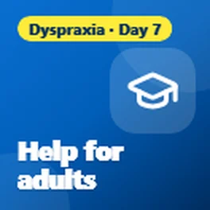
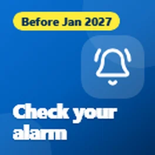
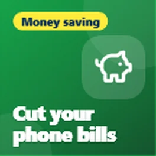
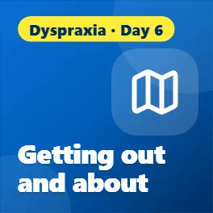
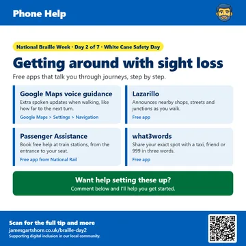
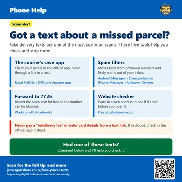
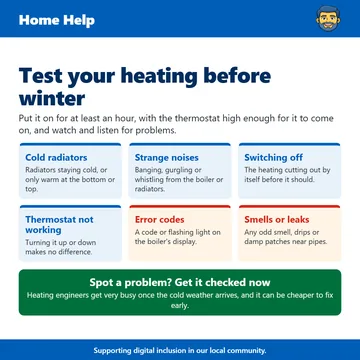

Free tech tips for Bridlington and the East Riding
Plain-English help with phones, computers and staying safe online. Free, with nothing to sign up for.
Latest tips

Dyspraxia: help for adults and students
It's the last day of Dyspraxia Awareness Week, and I wanted to finish by sharing some support for adults and students, because dyspraxia doesn't stop...

Have a pendant or fall alarm? Check it now
I wanted to share something important for anyone who has a personal alarm, like a pendant or a fall alarm, that works through their home phone line.
Free books and TV you can listen to
It's day four of National Braille Week, and today's tips are about books, radio and TV you can enjoy by listening.

Free tools to cut your broadband and phone bills
Today is the International Day for the Eradication of Poverty, so I wanted to share some free tools that can help you cut the cost of your broadband...

Dyspraxia: tech for getting out and about
It's day six of Dyspraxia Awareness Week, and today I wanted to share some tech that helps with getting out and about.

Let your phone read to you
It's day three of National Braille Week, and today I wanted to share some free ways to get your phone or computer to read things out loud for you.

Dyspraxia: apps to get moving
It's day five of Dyspraxia Awareness Week, and today's tips are all about getting moving.
Save money on food with your phone
Today is World Food Day, so I wanted to share some free apps that can help you save money on food and stop good food from going to waste.

Free apps that could help you save a life
Today is Restart a Heart Day, so I wanted to share some free apps and websites that can help you learn CPR and be ready to help if someone's heart stops.

Getting around with sight loss
It's day two of National Braille Week, and today is also White Cane Safety Day, so I wanted to share some free apps that help people with sight loss...
Dyspraxia: tools that make reading easier
It's day four of Dyspraxia Awareness Week, and today I wanted to share some free tools that make reading easier.

Got a text about a missed parcel?
I wanted to share a warning about fake parcel delivery texts, as they're one of the most common scams around at the moment.

Dyspraxia: when handwriting is hard
It's day three of Dyspraxia Awareness Week, and today's tips are for anyone who finds handwriting hard.

Struggling to read your phone?
This week is National Braille Week, so I wanted to share some free features on your phone that can make a big difference if your eyesight isn't what it...

Got an old phone or laptop in a drawer?
Today is International E-Waste Day, which is a good reminder about all those old phones, tablets and laptops sitting in drawers. Most of us have at...

Dyspraxia: tools to stay organised
It's day two of Dyspraxia Awareness Week, and today I wanted to share some free tools that help with staying organised.

Your phone could help in an emergency
Today is the International Day for Disaster Risk Reduction, so I wanted to share a few features on your phone that could really help in an emergency....

Sore hands? Let your phone and laptop do the work
Today is World Arthritis Day, so I wanted to share some features on your phone and laptop that can make life a lot easier if you have sore, stiff or...

Tech that helps kids learn, not lean on it
This week is Dyspraxia Awareness Week, so I wanted to share some ways technology can help children with dyspraxia. The idea is to use tech to help them...

Make your phone work for your wellbeing
World Mental Health Day was on 10 October, so I wanted to share a few simple things your phone can already do to help you feel a bit calmer and more...

Whatever you love, there's a community for it
I wanted to share something that a lot of people don't realise is out there.

Ads popping up out of nowhere?
Following on from my post about scary pop-up adverts, here's what to do if ads keep appearing on your Android phone even when you're not using any app.

Scary pop-up on your phone? It's just an advert
I wanted to share a tip about those scary pop-ups that sometimes appear on phones.

Is your sat nav out of date?
Here's a quick tip for anyone who still uses a sat nav in the car.
Shortlisted for the Time2Volunteer Awards 2026
I wanted to share a bit of news. I was recently shortlisted in the Time2Volunteer Awards 2026 for the volunteering I do with a local tech support...

Simple facts to keep your computer safe
I wanted to share a few tips about keeping your computer safe, because a lot of people end up paying for antivirus they don't actually need.

What is a QR code?
I just wanted to share a quick tip about QR codes.

Check your heating and hot water timers
With colder weather approaching, now is a good time to check your heating and hot water timers.

Test your heating before winter
With winter approaching, now is a good time to test your heating, especially if it hasn't been used much this year.
Browse tips by topic
- Scams and staying safe (4)
- Health and wellbeing (14)
- Money (2)
- Getting online and staying connected (2)
- News (1)
- Everyday tech (6)
What people say
Thank you very much Sir
Yes definitely useful & thanks. I will share with anyone I feel would find your tips useful 😃
Helpful, thank you
Get new tips by email
A short email when I post a new tip. Free, and you can stop any time.
You'll get an email to confirm. Emails are sent by follow.it, and every email has an unsubscribe link.